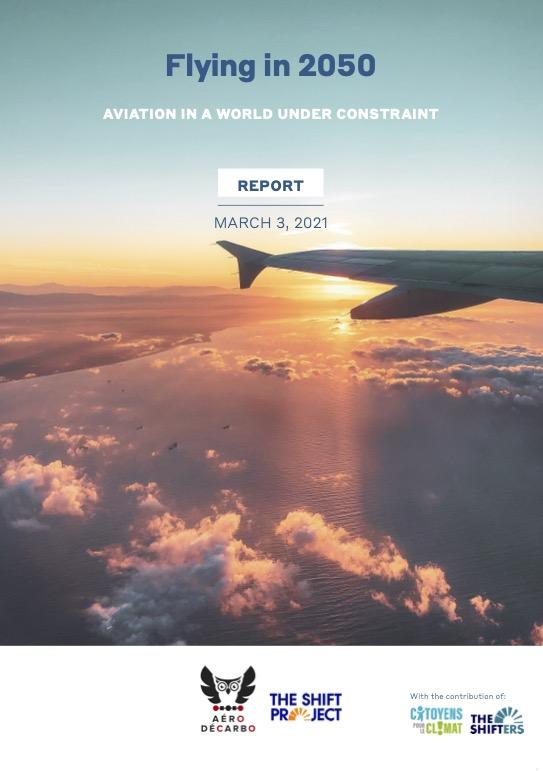

Flying in 2050
How can we act today to keep flying tomorrow in a constrained world? How can we steer the aviation sector towards trajectories that are compatible with climate issues and less dependent on fossil fuel resources?
Download the summary (10 pages)
Download the full report (135 pages)
Summary |
Full report |
|
|  |
Replay of the presentation webinar of the report "Flying in 2050" - Wednesday, March 3, 2021
The presentation materials are available under this link.
Flying in 2050: Future of aviation under climate and energy constraints
Few sectors occupy such a singular place in the energy transition landscape as aviation. As a cutting-edge industry with negligible climate impact for its defenders, and a fad of the ultra-rich who are used to minimizing their emissions for its detractors, it generates divisive opinions and sometimes sterile opposition.
The authors of this report support the idea that beyond these oppositions, another voice must be heard, as the opportunity arises to direct the revival of the aviation sector and the use of public money towards trajectories that are compatible with climate issues and less dependent on fossil fuel supplies.
In May 2020 an initial report entitled Crisis(-es), climate: preparing the future of aviation proposed a series of decarbonizing measures that the State could require in return for its support to the sector. By targeting actions that could be activated immediately and have significant effects as early as 2025, this report defended the idea that the recovery of a sector hit hard by the crisis was not incompatible with the launch of an effective decarbonization policy. On the contrary, it argued that delaying the energy transition in aviation makes it all the more vulnerable to the climate threat.
A sector on the move
The nine months between now and this publication have been marked by contrasting events. While Airbus has committed to producing a hydrogen-powered aircraft by 2035, and public statements on decarbonizing aviation have multiplied, the health crisis has continued, affecting the financial equilibrium of many players who are now facing an unprecedented risk of bankruptcy.
But these nine months have also seen many voices raised, those of engineers, pilots, air traffic controllers, airline employees and simple aviation users who have recognized themselves in the discourse of the Shift Project report. Expressing their interest in the approach, underlining its shortcomings and limitations, has led many of them to wish to continue the analysis.
These are the contributors to this new report: professionals from the sector who want to confront the agonizing but inescapable question of how to act today to continue flying tomorrow, in a constrained world. While no one underestimates the suffering and disarray caused by the COVID-19 crisis, the threats posed by climate change, the depletion of fossil fuels and the collapse of biodiversity on human life in general, and on aviation in particular, are far greater.
Committed professionals
"We who love aviation and who, for many, have made it their profession, we who love technology, great discoveries, all this prodigious human intelligence mobilized to make machines fly, we affirm that we love life, nature and science even more - this science that describes aerodynamic and climatic phenomena so rigorously, this science whose benefits we cannot enjoy while ignoring the upheavals that it projects.
We, aeronautical engineers, pilots, air traffic controllers, airline employees, users or simple lovers of aviation, tired of the divisive discourses towards it, sign this report with the ambition of creating the conditions for a calm debate on its capacity to drastically reduce its greenhouse gas emissions, in proportions compatible with a world that is liveable in 2100. We, climate-conscious aerophiles, claim to be part of the solution rather than part of the problem, by speaking out transparently, disinterestedly and scientifically on what the aviation sector can - and cannot - do to decarbonize itself.
These are the words that the industry professionals behind this work put on their commitment.
A more in-depth study since last May
The present study reworks the measures identified in the May 2020 version, broadens the spectrum and horizon of the proposals, and integrates the remarks and objections made since then, notably by the sector's professionals.
We propose here a factual and quantitative study, based on a scenario analysis, of aviation emissions trajectories by 2050. We adopt a holistic approach encompassing technological and energy assumptions, the prerequisites for their realization, as well as the impacts on uses and jobs. The use of resources (other than electricity and fuels) and financing are well identified (often determining) dimensions, but not quantified in the scenarios.
Action that must of course be both global and European, but also immediately French
Air transport, which is international in nature, requires a consensus among all countries (at least in Europe initially) to implement its decarbonization. What would be the benefits of efforts made in one region of the world if emissions were not controlled in another?
If the targets and regulations are not aligned, the highly competitive nature of air transport would inevitably work against the first players to embark on a low-carbon strategy. In this respect, the report examines the current international governance elements, namely the ICAO (International Civil Aviation Organization) CORSIA1 program and the European Union Emissions Trading System (EU-ETS), points out their strengths and limitations and recommends adjustments.
Although necessary, the implementation of an international agreement on decarbonization of the aviation sector will take time.
In the meantime, the French government, which has taken a particular interest in the sector through its aeronautics support plan presented on June 9, 2020, can intervene effectively at the national level without waiting for a broader consensus. In a context of climate emergency where time is against us, this report defends the need for joint action at national and international levels.
The objectives of this report
Propose the definition and implementation of a carbon budget for air transport;
To quantify the decarbonization measures proposed by the sector via a scenario analysis;
Test two decarbonization scenarios against the carbon budget to draw conclusions;
List the decarbonization measures that can be rapidly activated at the national level.
This work was carried out with the help of The Shift Project's volunteer association, the Shifters, and the CPLC (Citizens for Climate). It consists of a full report, a summary and a methodological note.